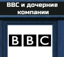
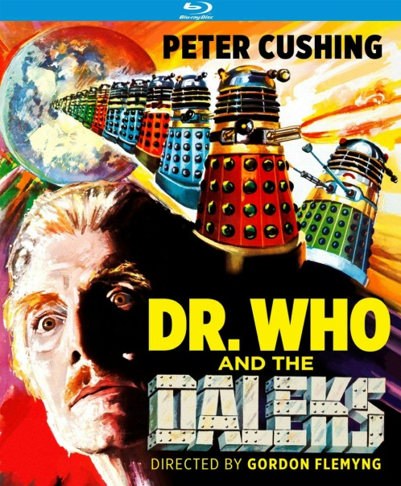
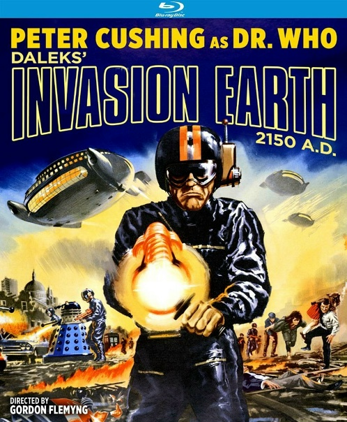
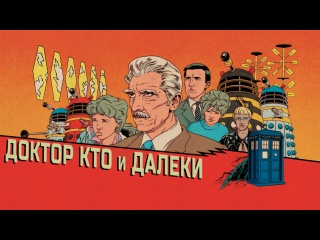
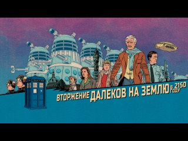

Таблица коллекции |  Навигация по канону |  Связные экранизации |
Таблица коллекции | Навигация по канону | Связные экранизации |



(Dr. Who and the Daleks) | (Daleks' Invasion Earth 2150 A.D.) |
 Дата выхода: 25.06.1965 Продолжительность: 1 час 23 мин. |  Дата выхода: 26.06.1966 Продолжительность: 1 час 24 мин. |
 Озвучки: MVO [The Imposssible Studio и TARDIS MEDIA] VO [RollingHead] + Original [ENG] Субтитры: Русские {Чемпион} + Английские |  Озвучки: VO [RollingHead] + Original [ENG] Субтитры: Русские {TIS} + Английские |